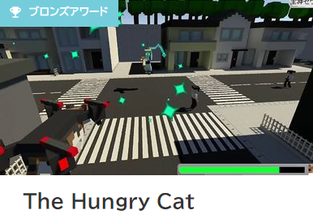
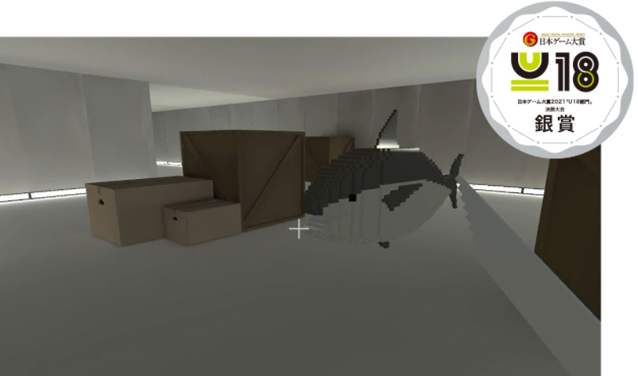
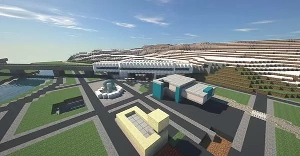
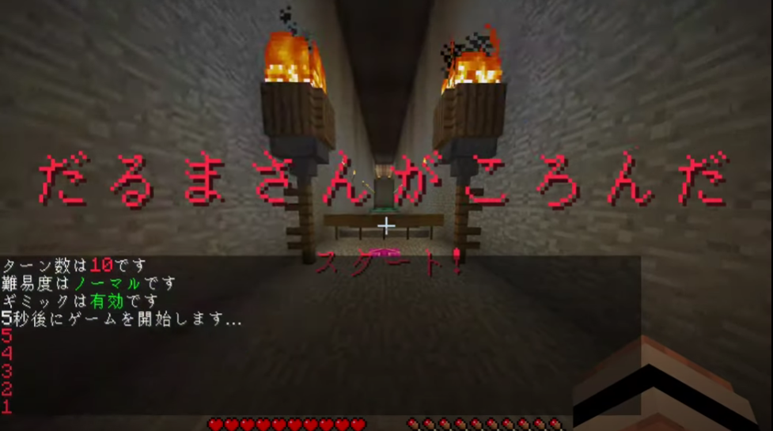
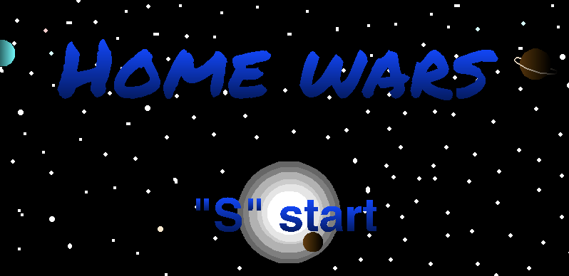

Achievements
- 
-
The Hungry Cat
Unityを用いて制作した、「食べたものが持つ能力を自分のものにできる」という能力を持った猫が町中を大暴れし、神やドラゴンなどと戦いながら最強を目指す、といった内容のオープンワールドアクションゲーム。
いわゆるバカゲーである。
「Unityユースクリエイターカップ2021」に応募し、ブロンズアワードを受賞した。また、こちらもゲームクリエイター甲子園にも応募している。
現在はGooglePlayストアでの販売に向けて制作中。
-
マグロの惑星
Unityを用いて制作した脱出サバイバルアクションゲーム。
異星に調査に向かった調査隊が臣下や突然変異を遂げたマグロに遭遇し、このマグロたちの脅威をかいくぐりながら惑星から脱出するというB級映画のような世界観のゲームとなっている。
ちなみに3Dゲームはこれが処女作。
日本ゲーム大賞U18部門にて銀賞を受賞。この結果とTwitterの自分の作品に対する盛り上がりを見て作者は大いに喜んだ。
また、ゲームクリエイター甲子園にも応募している。 - 
-
- 
-
イベント『Minecraft®×プログラミングでまちづくり！ みんなで未来の飯山市をつくってみよう！』
2021年8月8日に飯山市とマウスコンピューターによって開催された、プログラミングの基本を学びつつ、Minecraftで用意された飯山市のワールドに未来の飯山市に必要だと思うものを作っていく、という子供向けのイベント。
このイベントにて使用されたマップの制作を担当した。
-
オンラインゲーム会社説明会
2020年2月26日と3月11日に株式会社ビヨンドが行った「オンラインゲーム会社説明会」にて使用されたマップを制作、本番も裏の方でマップの操作を担当。
インターネットに初めて顔を載せた思い出のイベント。
ほかにも、「バーチャル1Dayインターン」などのマップ制作も担当した。 
-

-
UltimateKettle
ニコニコ動画にて開催されている「自作ゲームフェス新人賞2020」に応募するためにUnityで作った、アーケードゲームっぽい雰囲気の2Dシューティングゲーム。
プレイヤーは空飛ぶ薬缶を操作し、敵を撃墜しながら進む。
また、プレイヤーが発射する弾は撃った後下に落下する特性があるので打ちすぎには要注意。
-
Minecraft Plugin
Spigot APIを利用して制作した、日本の昔からの遊び「だるまさんがころんだ」をMinecraftのなかで遊べるミニゲームプラグイン。
オブジェクト指向型の言語の勉強のために制作。
最近は自由時間を利用してこれ以外にもいろいろつくったりしている。 - 
-
- 
-
Home Wars
2017年、中学2年生の頃にScratchを使用して制作した、家の中を舞台にしたシューティングゲーム。
2017年10月1日、PCNプロコン2017夏で最優秀賞を受賞。
ゲームを作り始めてから完成まで作り上げた初めてのゲームであり、初めて大会に応募して賞をもらえたゲームでもある。
ゴキブリや蜘蛛が途中のステージに登場するのでプレイの際は要注意。
※一部敬称略